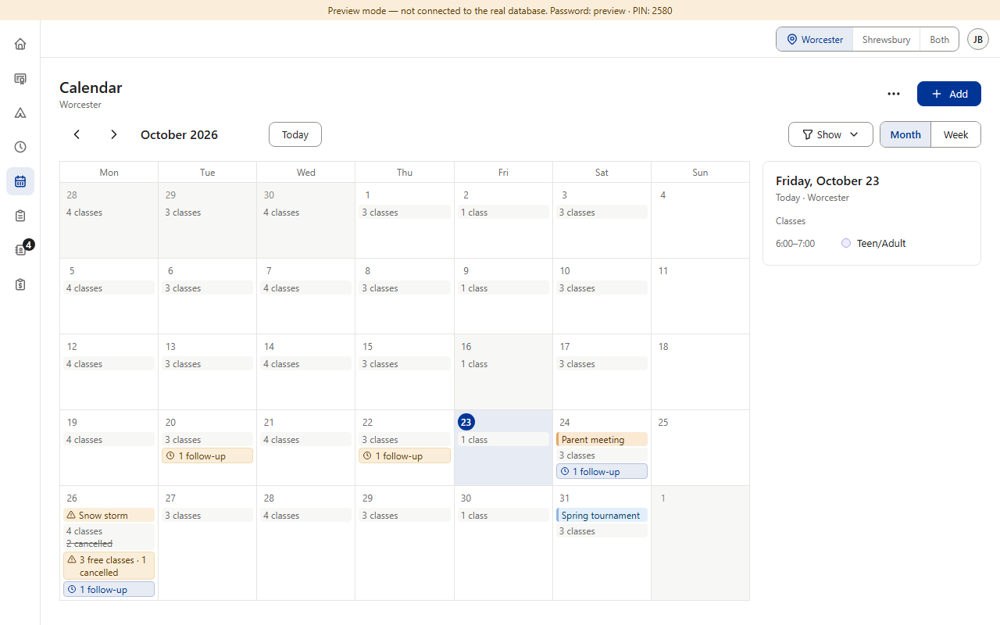
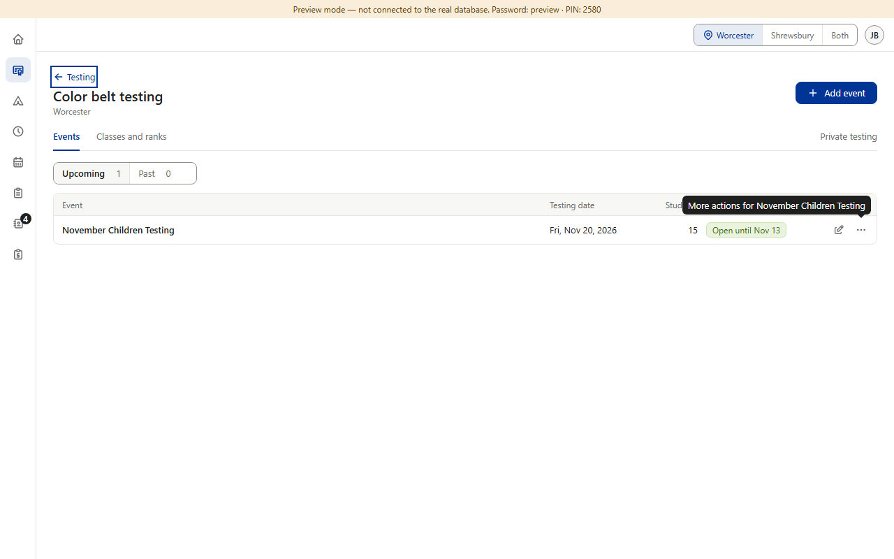
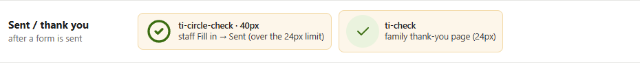
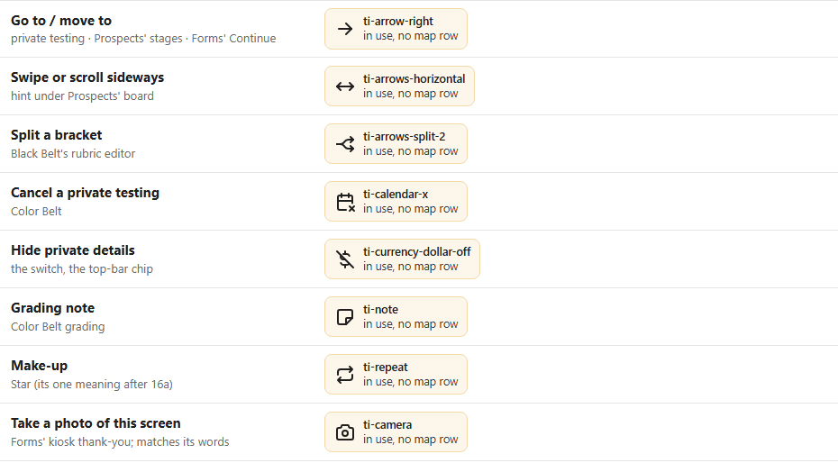
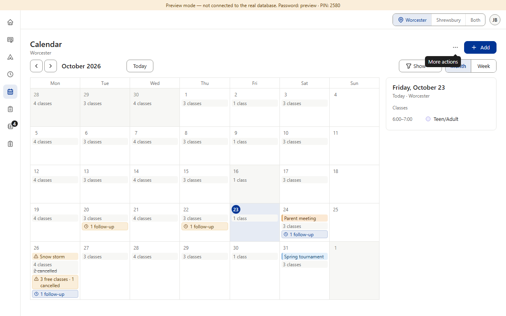
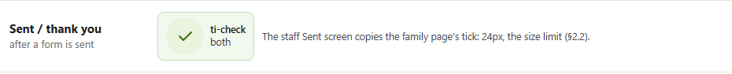
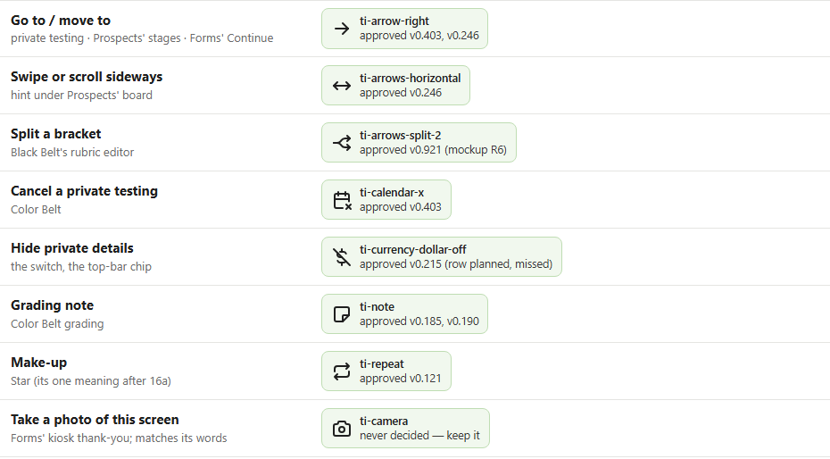

Approved in each section, plus drift. Three loose ends of the icon rules. Tooltips: every icon-only button needs a tooltip with the same words as its label (§1.4, §4). Camps, Finance and the testing sections use the shared button (28px, 16px icon, tooltip); Calendar, Schedule, Prospects and Forms use a plain 44px button with a 20px icon and no tooltip — 13 buttons (the Schedule build plan said to reuse the shared one). Forms' Sent screen shows a 40px tick, over the 24px limit (§2.2). The map: §2.4 puts an icon in the map before it is used; 8 icons in use have no row — 7 were approved in their sections (Hide private details' row was planned at the Finance merge and missed) and Forms' camera was never decided. Already settled: 12b's door icons, 16a's pencil and user-off; 15a turns Forms' and Finance's back arrows into links. (Preview screenshots at PC size · fake data; icon boards drawn from the app's own Tabler set)






